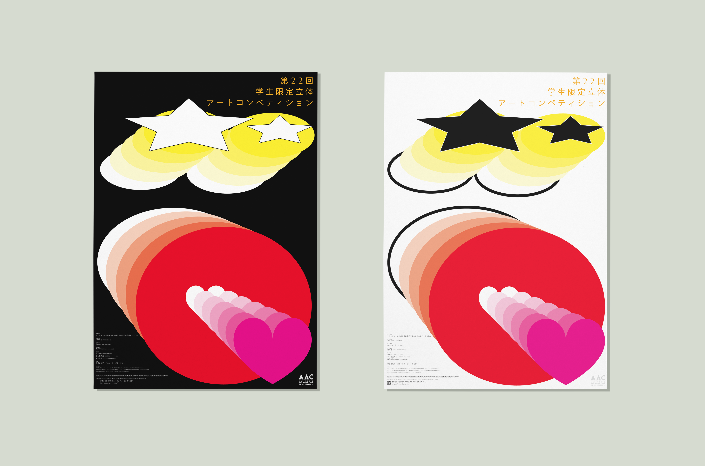

"" 


As a 3D study, one poster was created using a 3D version of the MOCHI characters. In making the poster, I adapted the lighting to evoke the color of burnt rice and to show the three-dimensionality of the rice cake. The poster was then arranged in an aligned manner, but this time it lost motion and became sleepy, so the text and objects were layered to add movement.